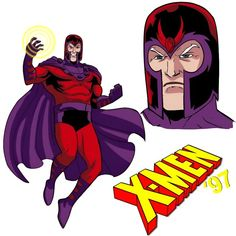

 Magneto, ou Erik Lensherr, é um dos vilões mais icônicos do universo Marvel e um dos principais antagonistas dos X-Men. Nascido em uma família judia na Polônia durante a Segunda Guerra Mundial, Erik sobreviveu ao Holocausto, o que moldou suas visões sobre a humanidade e a luta pelos direitos mutantes. Ele descobriu suas habilidades de manipulação magnética durante sua juventude, que se tornaram mais potentes ao longo do tempo. A tragédia de sua infância e suas experiências traumáticas o levaram a acreditar que os mutantes devem dominar os humanos para garantir sua sobrevivência. Magneto frequentemente se opõe ao Professor Charles Xavier, defendendo uma abordagem mais agressiva em relação à luta pela aceitação dos mutantes. Ao longo de sua história, Magneto passou por várias transformações, alternando entre vilão e anti-herói. Ele se uniu a diferentes grupos, como a Irmandade de Mutantes, e, em algumas versões, até mesmo se aliou aos X-Men quando a situação exigiu. Magneto é um personagem complexo, frequentemente debatendo a moralidade de suas ações e seu papel na luta pela igualdade entre humanos e mutantes. Sua determinação e poder fazem dele uma figura central nas histórias dos X-Men.